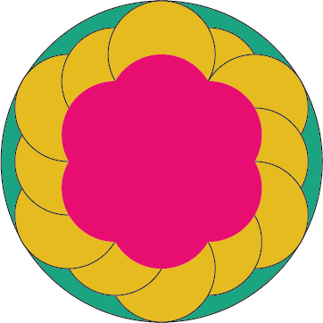
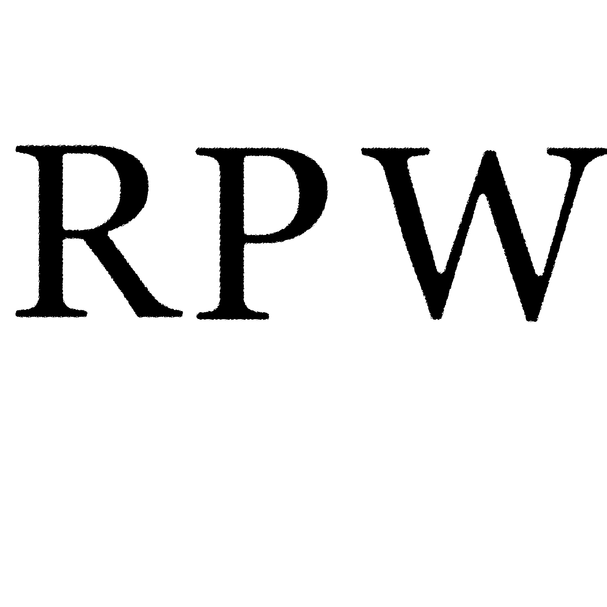
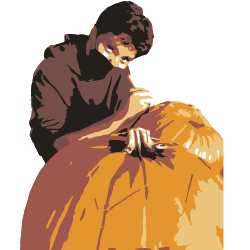

These were introductory artpieces to the Adobe Illustrator enviroment which served to teach the basics of anchor points.

In this project we created a watermark for future projects. We got to explore the effects avalible in Illustrator and make stylistic decisions in modifing the anchor points and corner roundness of a base font. The base font I chose was Georgia as its one of my favorites. The modification largly consisted of changes to corner roundness and changes in line width. It was a fun experience that helped introduce effects offered in Adobe Illustrator.

This was a fun couple of pieces in which we used the image trace tool in Adobe Illustrator to transform some photos to vector based artworks and then color them ourselves.